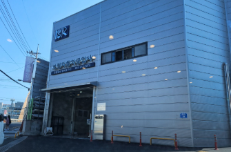
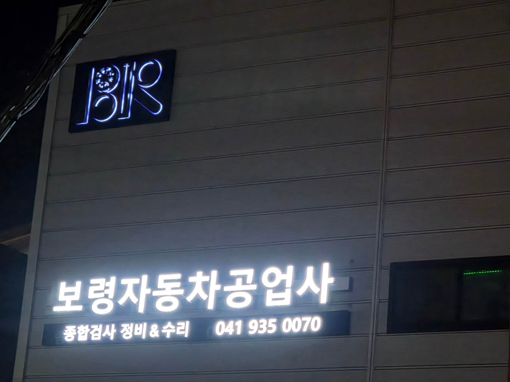

국토교통부 지정 자동차종합정비업 (1급)
여러분의 소중한 차,
여러분의 소중한 차,
보령자동차공업사에서
검사에서 수리까지 한 번에
판금·도장부터 엔진·하체 정비, 정기검사까지 한 곳에서. 보험 접수부터 출고까지 직접 챙기니, 차는 맡기고 일상으로 돌아가세요.
정비 항목
1급 정비업체는 차체·구조 수리와 도장까지 법적으로 할 수 있습니다. 큰 사고부터 소모품 교환, 정기검사까지 다른 곳으로 옮길 필요가 없습니다.
정기검사 · 종합검사＋
충청남도 지정 종합검사정비업체. 배출가스·제동력·등화장치 등 법정 검사 항목 전체 수검 — 전기차·수입차 포함 모든 자동차, 이륜차(오토바이), 총중량 5.5톤 이하 차량까지 가능합니다.
판금 · 도장＋
찌그러짐, 긁힘, 범퍼 교환. 전용 도장 부스에서 원래 색상코드에 맞춰 조색합니다.
사고차 수리＋
차체 교정, 프레임·구조 수리, 유리 교환까지 출고 전 점검 후 인도합니다.
보험수리 대행＋
모든 보험사 접수 가능. 자차·대물 처리 절차를 처음부터 안내해 드립니다. 자세한 진행 순서는 아래 "보험수리 절차"에서 확인하세요.
엔진 · 미션＋
경고등 진단, 누유, 소음, 변속 충격 등 원인부터 찾아 정비합니다.
하체 · 브레이크＋
브레이크 패드·디스크, 쇼크업소버, 하체 부싱, 휠 얼라인먼트.
소모품 · 일반정비＋
엔진오일, 필터, 타이어, 배터리, 에어컨 가스 점검·충전.
보험수리 절차
사고 났을 때, 이렇게 진행됩니다
처음 겪는 사고라도 괜찮습니다. 아래 순서대로 저희가 함께 처리합니다.
- 전화 한 통사고 상황과 보험사를 알려주세요. 견인이 필요하면 안내해 드립니다.
- 입고 · 손상 확인차량 상태를 사진으로 기록하고 수리 범위를 설명드립니다.
- 보험사 접수 대행견적과 사진을 보험사에 직접 보내 손해사정을 진행합니다.
- 수리 · 출고수리 후 최종 점검을 거쳐 출고합니다. 진행 상황은 수시로 연락드립니다.
맡기는 이유
보령 사람들이 찾는 이유
1
보령시 시내 유일
보령시 시내에 있는 유일한 종합자동차정비업체입니다. 멀리 외곽까지 나가지 않으셔도 됩니다.
2
중소벤처기업부 인증 백년가게
한 자리에서 대를 이어 영업해온, 보령 최초의 1급 정비업체입니다. 물론, 2021년 새롭게 단장한 건물과 시설은 현대적이고 쾌적합니다.
3
설명하고 고칩니다
무엇을 왜 고치는지, 비용이 얼마인지 수리 전에 먼저 말씀드립니다.
4
도장 전용 설비
먼지를 막는 도장 부스와 전문 도장 인력이 있어 마감이 깔끔합니다.
5
친절한 고객응대와 고객 대기 공간
자동차검사와 간단한 정비는 고객 대기실에서 기다리시면 됩니다.
6
검사에서 정비·수리까지 한 곳에서
종합검사부터 정비, 사고 수리까지 다른 곳으로 옮기지 않고 한 번에 해결됩니다.
전화·오시는 길

충남 보령시 중앙로 33
- 주소
- 충남 보령시 중앙로 33
- 평일
- 09:00–12:00
12:00–13:00 점심시간
13:00–18:00 - 토요일
- 09:00 – 12:00
- 일·공휴일
- 휴무
- 혜택
- 보령상품권 사용 가능 · 다자녀가구 우대
종합검사 · 정비 · 수리041 935 0070